Hi, my name is Anders and I work with DevOps tooling at Piano here in Oslo
I want to talk to you about delivery, and delivery automation today
What I want to talk about
What is a Delivery Platform?
How do we build a Delivery Platform?
So we’ll look at:
What is a Delivery Platform?
And how do we build one?
Let’s start by looking at Delivery Automation
We’ll start by looking at Delivery Automation in general
By this I mean, automating the process of getting source code into production
Let’s look at some examples of delivery automation
Knowit’s Delivery Automation
So I worked at knowit as a consultant in 2011. Our project was building an integration bus for the municipality
We had a pretty hip setup for the time, with a monorepo and a up to date Java version.
So here we see, Hudson, the build server checks for commits in Github. If a change is found it builds it and publishes the artifact to Nexus.
We then invoked some Ruby scripts that fetched artifacts from Nexus and deployed them to dev or production. This is the brain of the operation.
In addition we had puppet for configuration, and Nagios for monitoring
This worked great!
Finn’s Delivery Automation
In 2014 I joined Finn who had an ever more polished and customized Delivery System
They had their own tool, Finnbuild which could run both locally and on bamboo. It would let you build any Finn project just by issuing ‘Finnbuild build’.
Like at Knowit, any change would get picked up, built, tested and uploaded to nexus.
Then another homegrown tool, Pipeline would present a visual pipeline which would allow you to deploy to test, and later production.
This worked primarily for JVM projects, but as I left Finn support for containers were also in the works.
Finnbuild and Pipeline were the brains of this setup
When I joined Schibsted in 2016 we set out to create a global Delivery Platform for about 1500 developers.
Right of the bat there is a subtle difference here if we compare to Finn and Knowit. This system doesn’t have a central custom ‘brain’. Instead it’s a sequential line of events. We’ll get back to why that’s important later.
But as we can see Github notifies Travis of new commits, who in turn builds, tests and uploads the artifacts. Spinnaker is then notified about the new artifact and deploys them.
Because of the diverse tech stacks, a custom brain just wouldn’t be feasible. It would be too complex.
What enabled these setups?
Strong engineers
Focus on best practices and continuous improvements
Support from management
But all of these are pretty cool right?
What enabled these companies to tailor their delivery process in this way?
They had strong engineers with high nerd factor
There was also a heavy focus on continuous improvements
And Management understood the benefits of a good delivery process
What are these benefits?
Automated Delivery
Short feedback loops
Productivity++
More engaged product teams
So what benefits did these setups bring?
First of all automating delivery means less distractions, and more productivity. And when you can trust this automation it gives security.
Short feedback loops let’s you fix problems when they are fresh in your mind, which again increases productivity.
All of this also allows product to come closer to developers as Proof of Concept development is quick.
Well, yes and no
Knowit, Finn and Schibsted all had good tools that automated the Delivery process
The difference is is how these tools are connected
To understand this, we need to look at what these tools are are doing
Development loop
Deployment loop
Monitoring loop
We basically have three loops here
Development, deployment and monitoring
Development loop
The development loop starts by pushing some code change
We build it
We test it
We Validate it using some static code analysis or security check
If all is good, upload the built artifact
If not, repeat the loop
Deployment loop
So we started with the development loop
Then we deploy the built artifact
We run integration tests or manual tests
Then we verify based on the results or a manual judgment
And finally we deploy to production or go back to development
Monitoring loop

We started with development loop
Then we had the deployment loop
Now we monitor and watch for problems
This could be runtime errors, vulnerabilities and so forth..
When a problem occurs, we alert and maybe we rollback
In any case we go back to the development loop and start over
The Delivery Automation System
So basically we have a loop of loops here
This is what I call the Delivery Automation System
Everything is chained together nicely
All the steps are automated from src to prod
Basically what Knowit & Finn had
This is often implemented as a black box, that ‘fixes CI/CD’ as there is a custom brain that knows how our tooling should be connected.
For knowit this was some ruby scripts, for Finn it was Finnbuild and the Pipeline tool. Both of these had custom ‘brains’ that controlled the workflow.
When a DAS is perfect
For Knowit a DAS was perfect. The code was mostly Java and kept in a monorepo which was deployed to the same servers.
This is where a DAS shines, and allowed for lot’s of optimizations
Finn had more diversity and their DAS was starting to get a lot of additions. This meant that the tooling grew in complexity and they were basically in a process of creating a Delivery Platform when I left.
For Schibsted, the DAS just couldn’t work. As you might now, Schibsted is made up of several news sites and marketplaces around the world. And thus there is a lot of diversity between these sites.
We had different languages, build tools, artifact types, deployment targets and for a Delivery Platform this works just great as we’ll see.
If you keep adding new tools and support new tech stacks and deployment targets in a custom brain for delivery it will eventual become too complex and impossible to maintain.
If this sounds familiar a Delivery Platform might be a good next step for your organization. So let’s look at how that journey could be made.
There are different ways this could be connected
Maybe the DAS checks for new code, or may there is a webhook.
But we need to make sure that there is a uniform interface here
I’ve drawn the entire DAS inside the black box here, as there is usually only custom integrations between the tools. Meaning we can’t make any general assumptions about how they are connected.
If that’s not the case for you, then you’re already on your way!
Let’s say that we use Github for source code
We define an integration rule that when source code wants to be built, our black box must get a webhook.

Again let’s assume we have Jenkins for builds
Jenkins should now own the webhook interface from source code
And our next rule is that every build uploads a semantically versioned artifact
Great, our black box is shrinking.
Okay, so let’s use Nexus for Artifacts
And our next rule is that when a new artifact is uploaded, we send an event to the black box to trigger deployment.
Our black box now only deals with deployment
finally, we add Spinnaker for deployments and our black box is gone
Now we have a set of services, that are bound by clear rules
In theory, this means that any part of our tooling can be replaced, as long as the new tool abides by these rules.
So let’s onboard some teams from other parts of our organization.
From a DAS to chaos?
Oh no, what happened to our nice graph? :(
One team is using stash, which is fine as they hook into Jenkins.
One team uses Gitlab, again fine as they upload to Nexus.
One team is deploying to AWS, another to Bare Metal all fine as Spinnaker supports these targets.
And in our case of Spinnaker, we can even have a unified UI that visualizes all of these different build pipelines.
Instead of a complex black box, we have simple rules that allow for complex graphs.
Change is now a much much easier, because we removed the black box
A Delivery Platform doesn’t care which build tool you use
And neither should you.
We want to be able to change quickly, not dig deeper holes.
So we create glue by defining rules of interaction
Opt-in
Opt-out
Loose coupling
Tight coupling
Individual pipelines
Shared pipelines
Self served
Traditional SaaS
Dedicated Team
Collective effort
Now this looks very clear cut, which is never the case with these things.
But a platform is usually opt in, loosely coupled, customizable and self served with dedicated support.
Where as a Delivery Automation System is typically enabled by default, tightly coupled with the tools and hard to customize.
But at the bottom we see one of the main problems here
The DAS is basically a SaaS, but it’s usually not owned by one team, instead it’s often a collaborative effort which means it tends to acquire a lot of technical debt.
.. a customizable set of services that can be composed through well defined rules into a pipeline that builds, verifies and deploys source code in a secure , predictable and repeatable manner with sane defaults .
So to wrap up this part, I’ll let you read the definition < let them read the slide >
Or in keywords for those who hate walls of text, like me
Or to summarize
A test, build and deployment process which is: - Customizable - Secure - Predicable - Has sane defaults
Hopefully this has given us a common ground to build on.
What I really want you to understand here is the difference between a Delivery Platform and the more common Delivery Automation System and how they both are good approaches but shine in different scenarios.
The profit and pain
Right, so finally, how do we build one?
Step one: figure out where we are!
What is the current situation in our company?
What works, what doesn’t?
What is currently causing the most pain?
Where can we add the most value?
Who can help us build this?
Do we have backing to do this?
Define our current state
Interview people from everywhere in the organization
Developers, Infrastructure, Managers, Product, Maybe even customers?
What are their thoughts on how we deliver software?
Where do they feel that we are?
Do they all agree? Usually, not.
What are we looking for?
So what are we looking for here?
We want to know What should we support by default
Where we can give the most value
We want to Identify what teams can collaborate, and share tooling or customizations
And we want to Identify and help mitigate political/personal issues between teams
So am I a team friendship coach now?
Yes, kind of..
If the teams are not cooperating you will be blocked by discussions and support.
If teams are collaborating, they will support each other.
Support and on boarding is by far the most expensive work in this process.
Gather data
Step two
Start gathering metrics to visualize what you’ve learned from the interviews
Did the metrics confirm or deny what you learned?
Let’s put this data in a dashboard.
One episode, where we added data from SonarQube. It showed a lot of tech debt. SonarQube had been running for over a year, but now that it was visualized one engineer took it upon them self to fix almost 200 hours of tech debt in a couple of days. Instant win.
Dashboards make it official
But be careful..
Dashboards make the metrics official, so show things that give value, but focus on what can be improved.
Dashboards can help us argue the case for spending resources on tech debt or new features.
But what management sees, they will measure us on. And metrics are almost never the answer for measuring people performance.
The Golden Path
Too much freedom, can be a bad thing if it means that you have to create your entire deployment setup manually.
So how much freedom is enough?
We could just provide the tools and let everyone compose their own automations
We could have just provided a bunch of services for people to use.
Freedom to choose from all the tools
Could be nice for experienced DevOps teams
Less dependent on the Platform team
Huge cost in on-boarding for inexperienced teams though
Basically what AWS does and it’s not exactly a Delivery Platform
The Golden Path
Provide a default set of tools with batteries included
Instead we could provide a default set of tools with batteries included, and this is in fact our third step.
Teams are free to work on code, rather than configuration
Teams are still free to customize their tooling
They gain the security of having support
On-boarding new engineers is much easier
A visual Pipeline
Managed secrets & environment variables
Hardened base images
Monitoring with default metrics & logging
Support
So what do we need for this?
A visual Pipeline, like spinnaker or Gitlab or Tekton which can show us exactly what is currently happening in our delivery pipeline.
Managed secrets & environment variables, automatically injected at runtime
Hardened base images for containers or VMs
Monitoring with default metrics & logging
Support
Let’s look at a simple example at how we could onboard teams
example.yml
type : 'Java' application_name : 'dogfood-service'
So let’s opt in to the Platform by adding this example.yml file to our git repository.
It requires a type and a name for the app, that’s it.
When we commit this file, a simple jenkins build is configured, along with deployment of the artifact and a container to k8s.
Everything we don’t see here is set by default.
Is nice, yes? üëç
But how can we extend this?
Maybe I want to disable the SonarQube check?
Or change the health check url?
I want freedom damn it!
example.yml
… healthchecks : liveness : http : path : /_/custom_health_path ingress : - host : dogfood-custom.ingress.local ports : - target_port : 6969 replicas : maximum : 13 minimum : 37 SonarQube : - enabled : false
Well this was actually a part of a k8s template
So we can drop straight into k8s. With full access to it’s powers.
This example is based on PaaS, which we used at Schibsted.
And for a k8s shop, this makes a lot of sense.
You might need a different way of doing this in your platform.
But this idea can be implemented in many ways as it relies on a simple concept
Convention over configuration
Driving on an new road?
Eating in a new restaurant?
Talking to a new person?
And the concept is convention over configuration.
What if you had to check a manual before: driving, eating or talking to someone?
Instead we rely on conventions
We know that driving on a road in Oslo is similar to most roads other roads.
This saves time, and makes us feel safe.
Convention over configuration
Not only user benefit from this
It makes a world of difference when:
Integrating tools
Figuring out what belongs where
Setting up dashboards
Naming conventions, between Github and Nexus for instance
You can just follow the name
If you know how we name things, you can find things without help.
But don’t just blindly follow
Challenge the conventions when they seem wrong, that’s how they evolve
Conventions should be like the golden path, not like a walled garden.
Conventions should be like the golden path, not like a walled garden.
So, how do we know that we are winning?
How do we know our platform is useful?
We have to define our success metrics
interviews gave us status quo
We know a bit about how to layout our platform and what our users need.
But where do we want to go with this exactly?
Defining success (and failure)
Desired state
Incremental small goals
Monitor for red flags
We should define a desired state, and this will be our step 4.
We reach this state by creating small well defined goals, to keep us motivated
Because a Delivery Platform is a constant work in progress
There is no real end goal, but rather a moving target which is the ‘desired state’
This means that staying motivated can be hard, as we’re always changing our goal. So savor the small victories.
Monitor red flags
Teams disabling features
Lack of team metrics improvement
I also wrote monitor red flags on the previous slide. What could those be?
Teams start disabling a certain feature, why? Is it not working/helping?
Teams have no improvement on metrics, are they not using the tooling?
Is this mutiny, rebells? Probably not.
These are signs that the platform isn’t helping them
We need to understand why and adapt
Success isn’t just about what developers want
The organization also needs us to focus on security, which is often overlooked
People tend to think they have okay security, without any actual data or proof, and then they get hacked and have no idea what to do.
Like Mike Tyson says, “Everybody has a plan until they get punched in the face”
We can easily add security checks and alerts, and even automatically create pull request for bumping dependencies. We could also supply tooling for incident management.
So, we have our status quo, we have our ‘desired state’
How do we start actually doing this?
First, we should use the tools ourselves.
Then onboard smaller, newer teams with less legacy
Usually they have less automation in place, maybe never even deployed to production?
They are often happy to get help, as they tend to be stretched for resources
Here I am wearing myself out to get a bunch of sour grapes that are not worth gaping for.
- Aesop’s Fables
I’ll let you read this quote from Aesop’s Fables.
The story goes, that the fox eyed the biggest grapes hanging on the highest vine.
When he couldn’t reach them he belittled the grapes, as sour and not worth his time
This is a classic mistake of over-reaching, and it’s easy to do.
As on-boarding high profile teams gives the platform publicity and validation
But the stakes are high, and these teams don’t have time to spend on your WIP platform
We need to be stable for these teams to onboard
Ask for volunteers instead
Or prepare for a challenge!
So ask for volunteers, or prepare for a challenge!
In the early phases of creating the first proper platform at Schibsted, we were instructed to on-board certain teams
This sometimes worked, but also failed as some of them didn’t really need our tooling.
We got stressed as we saw this would fail, and pushed harder which gave the impression that we could give them orders.
This also triggered a few cognitive biases, so let’s just look at a few of those to be aware of.
Loss aversion
We prefer avoiding losses to acquiring equivalent gains.
< let them read >
We don’t like loosing things, even with a potential gain.
surprisingly, teams in dire need of migrating from unmaintained/buggy solutions, were sometimes reluctant.
They agreed that the situation was bad, but were never satisfied with our offering even though they agreed it was better.
They had invested a lot of time, in small nifty features.
These things didn’t seem important as they were minor things.
But our brains don’t work like that, we failed to pay attention, and they did not want to lose their useful features.
IKEA effect
We tend to place a disproportionately high value on products we’ve partially created.
< let them read >
As a kid, I always felt that dinner tasted better when I helped make it.
and keeping the previous team in mind, they had created this tooling themselves
the IKEA effect probably contributed to their reluctance to on-board
But not all biases will work against us.
Let’s say you’re buying a new car. It’s a bit expensive, but really nice.
The sales person says: ‘I drive this car my self.’
Suddenly we trust their opinion more
This is often labeled as a logical fallacy, but there is some truth to this
Using the tools we make, is a great way to test, and improve them.
Dog fooding makes us both early warning system, and experts
Be aware though
You have insight into the tools in a way a user never will.
But be aware of your own advantage
You know the code and the integrations
You know where to report bugs and how to fix configuration
And speaking of reporting bugs, how should we handle support?
Support
We’ve started to on board teams and everything was going great! But suddenly they started asking questions, finding bugs and stealing all our time!
- Some Platform Engineer probably
< let them read the quote >
This isn’t a direct quote, but it does illustrate a common problem
How do users report problems?
How do these reports find the responsible person/team?
And who follows up on reports that span several teams?
Is this the users responsibility, the teams, or someone else?
In the beginning it was great!
One Delivery team of 4 people
Artifactory, Travis and Spinnaker
We helped people on Slack
In the early days at Schibsted we had one Delivery team of 4 people
We provided Artifactory, Travis, Spinnaker in a nice platform package
We helped people on Slack 24/7 and were extremely available
This worked great, we got lots of valuable feedback
Fast iterations, detailed bug reports, quick fixes
The user felt safe, because we were right there with them
It was Super fun!
But it doesn’t scale
A few months later the magic was gone. We were exhausted.
Repeated questions, outdated documentation, constant distractions.
Some users were getting really frustrated, as their tickets weren’t being handled
We, were getting frustrated as we were getting nowhere
So what had changed?
20 users had increased to 500
We were no longer picking only low hanging fruits, but everyone was free to onboard
And this is all perfectly natural and needs to be addressed.
Suddenly; To our rescue, comes a white knight
We had recently gotten a dedicated manager
He helped us re-think our support setup
The Unified Support
One entrypointSlack only for dedicated support, and incidents
One call handles support routing
He introduced the unified support
Letting users have one place to report bugs, for all services, all teams
At this time there were other teams handling some services. But users only see the front end. So that’s where they report the bugs.
Our previous Slack support channels became community channels instead.
And in these channels user started taking on support, huge help!
Finally we had support under control.
To summarize
Define your ‘Current State’
Get dashboards
Define a Golden Path
Rely on Convention over configuration
Define your ‘Desired State’
Focus on low hanging fruits first
Observe and manage biases
Have a single point of entry for support
define your current state
Create dashboards with metrics
Define a golden path
Define your Desired State
Create a single point of entry for support
I’d like to end with this
The pit stop was an analogy we used a lot at Schibsted
We were the pit stop crew
Developers were the drivers
They knew where to stop
We know who should fix what
Quick fix, quick win
Questions?
Twitter/Github: @brujoand
PS: Piano.io is hiring in Oslo!
Feel free to share your experiences, ask questions or disagree with me on
Shoot me a message if you want to learn more about working at Piano